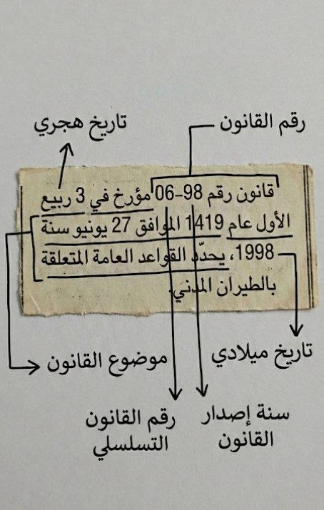
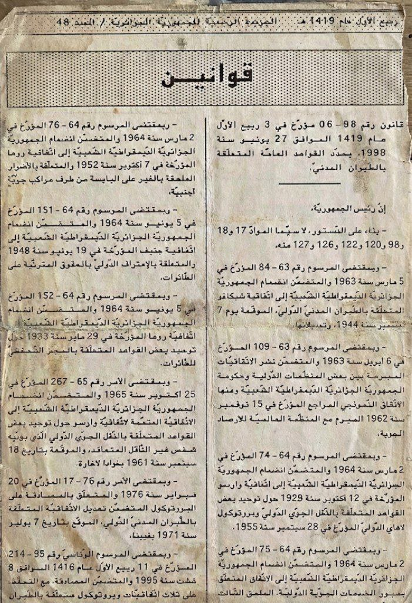
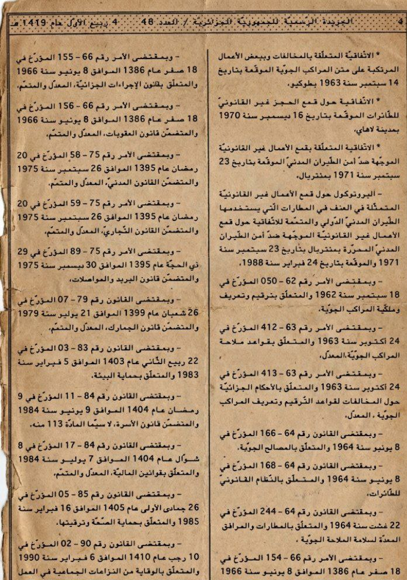

اضغط على أي عنصر للانتقال مباشرة إلى المحور المخصص:
- 1 مقدمة: ماهية الصياغة التشريعية
- 2 البيانات الشكلية للنص (تحليل وثيقة العنوان)
- 3 المرجعية الدستورية (تحليل الديباجة)
- 4 الانسجام التشريعي (تحليل التأشيرات)
- 5 نموذج تطبيقي: تفكيك المادة 12
اضغط على أي عنصر للانتقال مباشرة إلى المحور المخصص:
تعتبر الصياغة التشريعية "فن" وعلم تحويل السياسة القانونية إلى نصوص ملزمة. يهدف هذا العرض إلى تحليل المنهجية المتبعة في صياغة القانون رقم 98-06.
سنعتمد في هذا العرض على المنهج التحليلي الوثائقي، باستعراض صفحات من الجريدة الرسمية.
أول خطوة في المنهجية هي ضبط "الهوية الزمنية والقانونية" للنص بدقة:


نص القانون: يبدأ بذكر رقم القانون وتاريخه وموضوعه، وهو "تحديد القواعد العامة المتعلقة بالطيران المدني".
الديباجة: تبدأ بعبارة "إن رئيس الجمهورية"، وتستعرض الأسس القانونية التي بناءً عليها تم إصدار هذا القانون، وتشمل:
استخدام تقنية "التأشيرات" (Visas) لربط القانون بمحيطه التشريعي:

تظهر الوثيقة بوضوح استحضار القوانين الأساسية من السبعينيات، تحديداً الأمر 75-58 (القانون المدني) و الأمر 75-59 (القانون التجاري)، لضمان وحدة المصطلحات وعدم تعارض الأحكام الجديدة مع القواعد العامة.